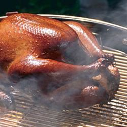

Grilled Turkey

Description
369 calories; protein 46g; carbohydrates 1.4g; fat 15.9g; cholesterol 134mg; sodium 112.6mg.
Ingredients
- 1 large onion, diced
- 1 (750 milliliter) bottle red wine
- salt and pepper to taste
- 12 pounds whole turkey
Steps
- In a pot style grill, fill the bottom with a 5 pound bag of charcoals. Light the charcoal, and when ready, spread to cover the bottom of grill.
- Wash the turkey down and stuff with onion. Rub the exterior down with salt and pepper.
- Place the turkey in a deep aluminum roasting pan. Place the pan on the grill's grate. Pour wine over the turkey. Cover the top of the turkey with foil.
- Cover the grill with the lid and open the vents. Grill the turkey for 60 to 90 minutes, or until meat is to your liking. Baste frequently. You might need to add water to the pan if the wine evaporates.